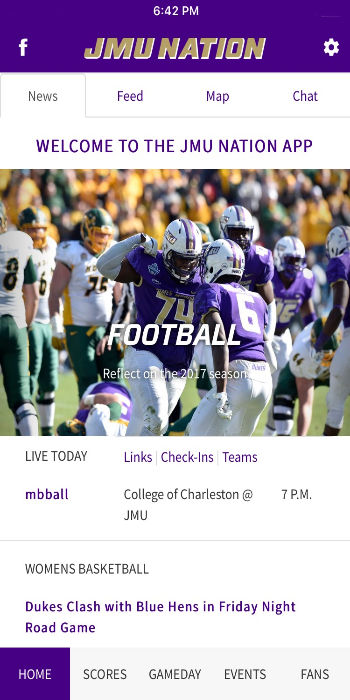
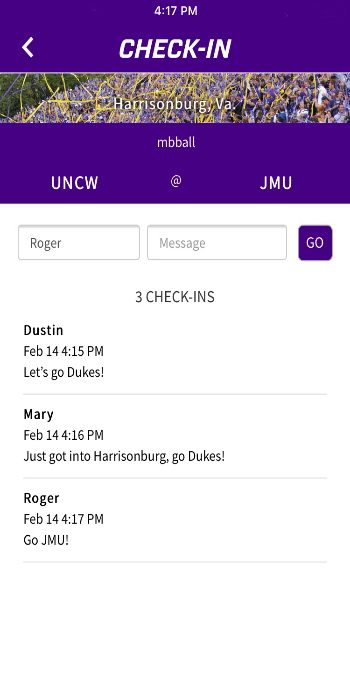

the JMU Nation App
Welcome to the next level of JMU
The JMU Nation App is the bridge between sports, news, updates, and social media, connecting them all in a platform designed by fans, for fans.


the JMU Nation AppContact Us
The JMU Nation App is the bridge between sports, news, updates, and social media, connecting them all in a platform designed by fans, for fans.
the JMU Nation AppContact Us